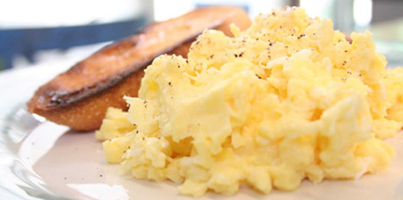

Huevo Revuelto

Son simples y rapidos de hacer.
Ingredientes
- 5 huevos
- 1 cucharada de mantequilla
- Sal y pimienta molida
Preparacion
- Derrite la mitad de la mantequilla a baja temperatura en la sartén.
- Batir ligeramente la clara de huevo con un tenedor 10 a 12 veces.
- Vierte la clara de huevo en la sartén y revuelve constantemente con una cuchara de madera.
- Cuando el huevo comienza a parecerse a una ligera tormenta de nieve, añadir las yemas y seguir removiendo hasta que las yemas estén parcialmente cocidas.
- Retirar del fuego, sazonar, añadir el cebollino y la segunda parte de la mantequilla. Servir de inmediato.
Un gran desayuno!